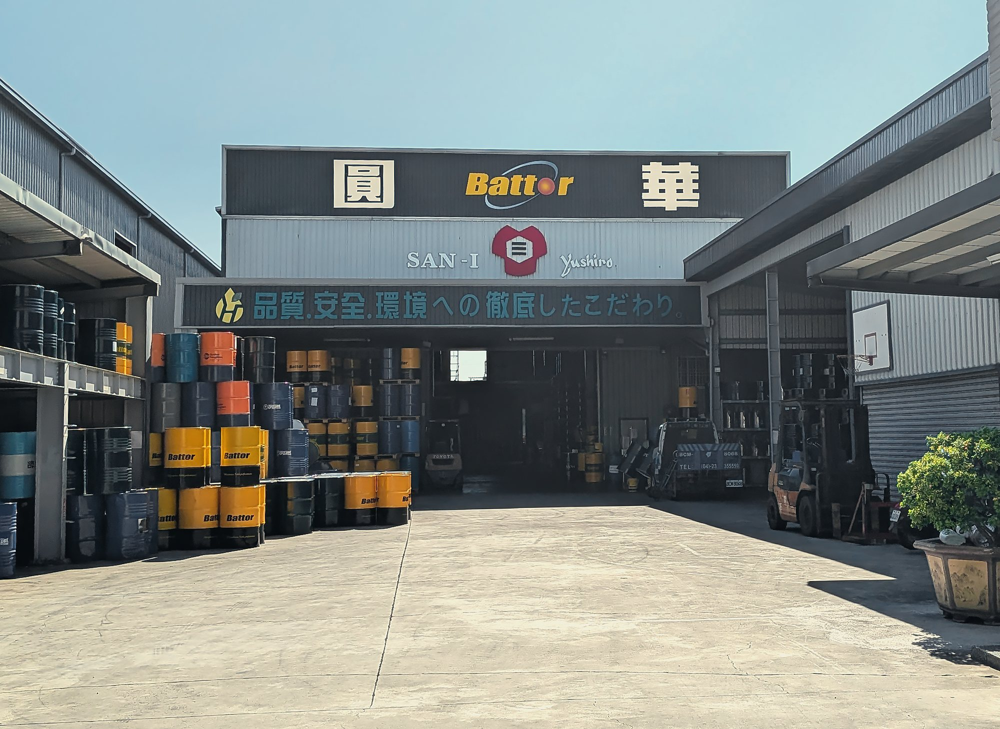
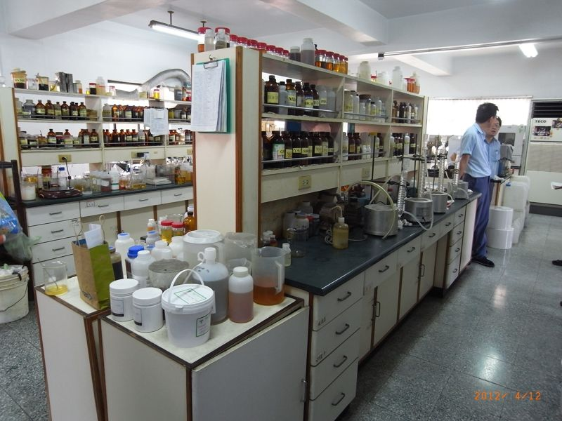
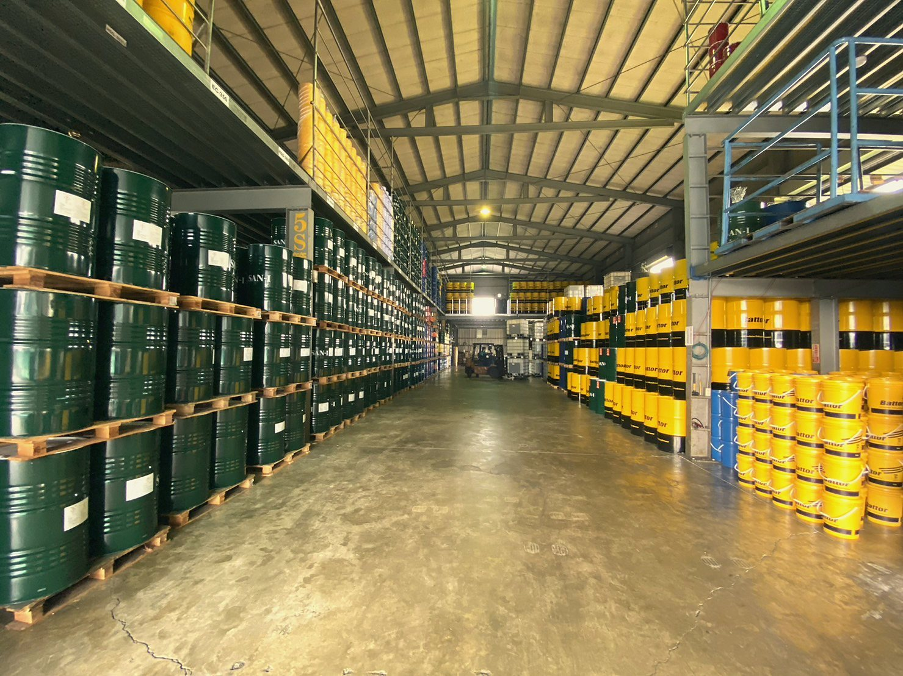

從金屬加工油品出發，持續走進加工現場
產品只是起點，真正重要的是能不能符合您的現場加工需求。
圓華油品長期投入金屬加工與工業用油領域，從油品供應出發，逐步累積產品應用、現場服務與製程問題處理經驗。隨著客戶需求從「選擇適合的油品」，延伸到使用管理、換液、廢水處理與後續清運，圓華也持續拓展服務內容，希望以更完整的方式，回應製造現場實際面對的問題。
從油品開始，理解加工與製造現場真正的需求
金屬加工現場面對的問題，往往不只是一款油品是否符合規格。
加工材質、機台設備、刀具、加工方式、水質、使用濃度與日常管理，都可能影響切削液使用狀況、加工品質與後續廢液處理。
因此，圓華在提供產品之外，也重視實際使用條件與現場狀況。從了解加工需求、產品使用，到後續處理方式，希望讓每一次產品選擇，都更貼近客戶真正面對的問題。

客戶的需求延伸到哪裡，我們的服務就持續往前跟進
圓華最初從金屬加工油品出發，但在長期服務過程中逐漸發現，客戶真正面對的問題不會只停留在產品交付。油品導入之後，仍可能涉及使用狀況、濃度管理、換油換水、廢液處理，以及後續清運等不同環節。
因此，圓華逐步從產品供應延伸至現場服務、廢水處理設備與後續處理，希望減少客戶面對不同供應商時的溝通成本，也讓油品使用與後端處理之間有更完整的銜接。
- 01
油品與產品應用
從切削液、切削油到各類工業用油，依實際使用需求協助評估。
- 02
現場使用與技術支援
依產品導入與使用狀況，提供後續服務與相關支援。
- 03
設備與後續處理
依需求延伸至廢水處理設備、換油換水與廢油／廢水清運。
以產品與技術為基礎，持續擴充服務能力
圓華長期投入金屬加工與工業用油市場，並持續透過不同品牌、產品與設備，建立更完整的服務能力。以 SAN-I Yushiro 日本技術與金屬加工液為核心，搭配 Battor、Formosa 等不同油品選擇，並延伸至 CosmoTech 廢水處理設備，讓服務範圍能從製程用油進一步銜接至後端處理需求。
我們重視的，不僅僅只是把產品交出去
- 01
先理解現場
每一個加工條件與使用環境都不同。比起先推薦產品，我們更重視了解目前使用狀況與實際問題。
- 02
持續追蹤使用狀況
產品導入不是合作的終點。實際使用後的狀況，才是判斷方案是否真正適合的重要依據。
- 03
把不同環節串起來
從油品、換液到廢水處理與後續清運，依實際需求協助串聯服務，降低不同環節之間的溝通落差。
我們是您加工現場遇到問題時，可以一起討論並協助調整的夥伴
圓華不會僅是在客戶需要採購油品時出現。
從產品選擇、油品調整、實際使用，到製程後端的處理需求，我們希望透過持續累積的產品與現場經驗，和客戶一起找到更合適的處理方式。
面對不同加工條件與製造需求，我們不預設唯一答案，而是從現場實際狀況開始討論。

有現場問題，不確定該從哪裡開始？
- 不確定該使用哪一款油品？
- 正在處理切削液壽命、異味、生鏽或廢水問題？
告訴我們目前的加工條件與使用情況，由圓華團隊協助了解需求並評估適合的產品與服務方式。
圓華油品股份有限公司
- Tel
- 04-2335-5559
- Fax
- 04-2335-8886
- Hours
- 週一至週五 08:00 – 17:00